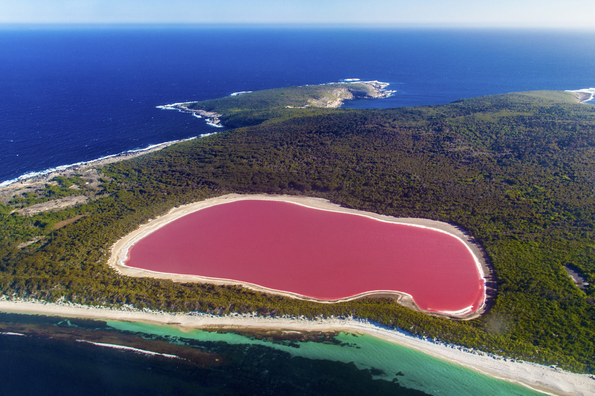

DAKAR
Venez découvrir la magnifique ville de Dakar avec ses énormes diversité ethnyques et culturelles
Welcome to SENEGAL,Dakar!! Soyez les bienvenues dans le pays de la TERANGA le pays des CHAMPION D'AFRIQUE!!

Le lac Rose, de son nom local lac Retba,
est une lagune côtière fermée,
c'est-à-dire coupée de la mer,
Situé au Sénégal, à proximité immédiate de Dakar.
Le « Lac » s'étend sur environ 3 km²,
avec une profondeur faible.
Ces eaux sont salées et ont une teinte rose
en raison de la présence d'une algue microscopique.
Le Musée des civilisations noires,
Le Palais des Sports de Diamniadio, ou Dakar Arena,
La mosquée Massalikoul Djinane
Ou Massalikul Jinaan, qui signifie mosquée des itinéraires du paradis,
de Dakar est la deuxième plus grande mosquée du Sénégal
après celle de Touba, construite en 1932
et l’une des plus grandes de l'Afrique de l'Ouest.
Elle est située à la commune d'arrondissement Grand Dakar